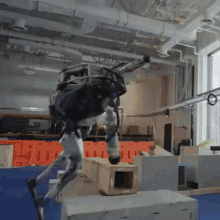
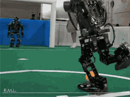
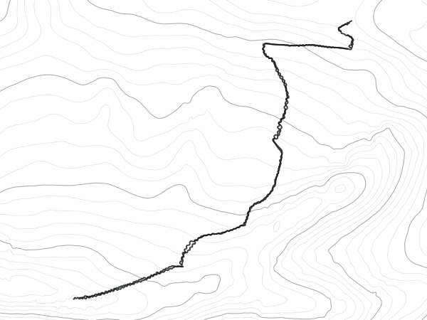

Hazard Intelligence records how people move on dangerous ground, rebuilds that exact ground in physics, and trains robots on it. Skiing and hiking first.
Sources: French government winter prevention kit, 2023 · NPS incidents, 2017 · CAIC ten-year average
A demo shows the run that worked. Deployment is everything else: a slick floor, a kitchen the robot has never seen, a shove nobody planned for. Physical Intelligence says it plainly: robots "can only operate in environments they've been trained in."


Language models learned from the whole internet. Robots have nothing like it, so the industry is paying people to move in front of cameras, in suits, in headsets, at scale.
| Who | How they collect | Scale |
|---|---|---|
| Figure | Films people living in Brookfield apartments, and pays anyone with a phone to film chores | 108 countries |
| Micro1, Instawork | Gig workers mount iPhones on their heads to record folding, cooking and cleaning | 50+ countries |
| Generalist | Wearable grippers in homes, warehouses and workplaces | +10,000 hours a week |
| Shanghai data factories | Rows of operators teleoperate robots through everyday tasks | 4,000 m² floor |
Nearly all of it is kitchens, tables and warehouse floors. Almost none of it knows the ground under the person: the slope, the snow, the scree.
Sources: Tesla job posting, via IoT World Today · Figure Index launch · Figure, Project Go-Big · MIT Technology Review on gig data workers · Generalist GEN-0 · Sixth Tone on Shanghai's robot training factory · Ken Goldberg, Science Robotics 2025
Edge cases live where the ground changes: ice under fresh snow, loose scree, a 35° pitch, a root across the trail. We record people moving over exactly that ground, rebuild the same ground in physics, train the robot there, and send it back to wherever it still falls. Every fall tells us what to record next, so the data goes straight at the long tail instead of more of the easy middle.

Phones, cameras and videos record how people move, and every sample is tied to the ground under it.
Marmolada · 6 descents, 79 min of GoPro motion at 100 Hz · Prochazka 2026, CC BY 4.0Any slope or trail on Earth becomes a physics world from elevation and map data, with snow that grips and slides like snow.
Val d'Isère · Bellevarde · 2 m elevation grid, 62 gatesThousands of robots practice on that ground at once. Where they fall tells us what to record next.
100 Unitree G1 policies on one slope, in simulationSki patrol, rescue teams and mine crews work on ground no robot has learned. Robots learn to move from people, and almost none of that motion records what was underfoot.